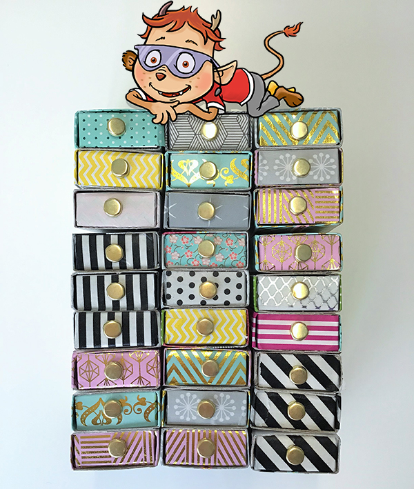
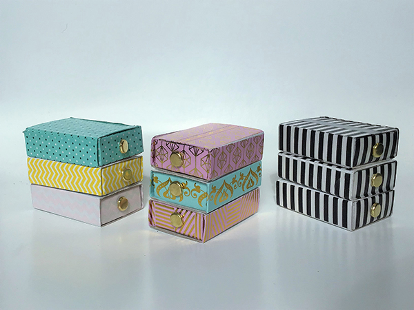
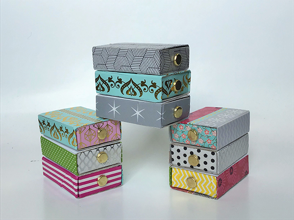
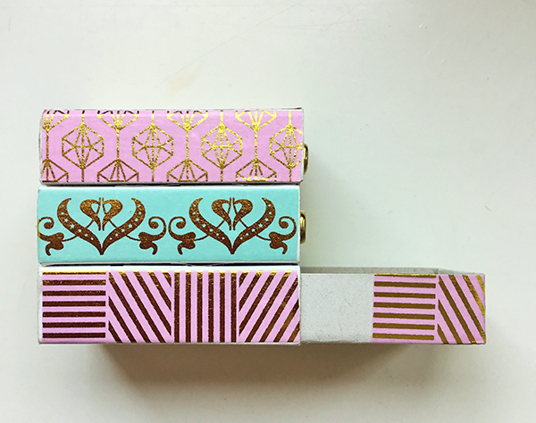
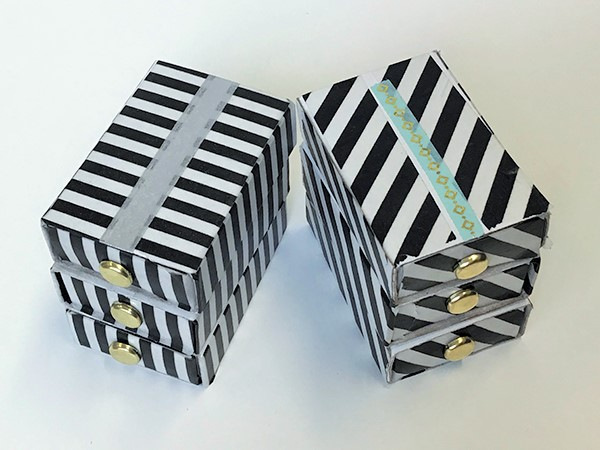
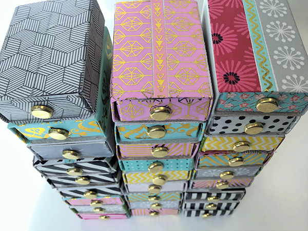
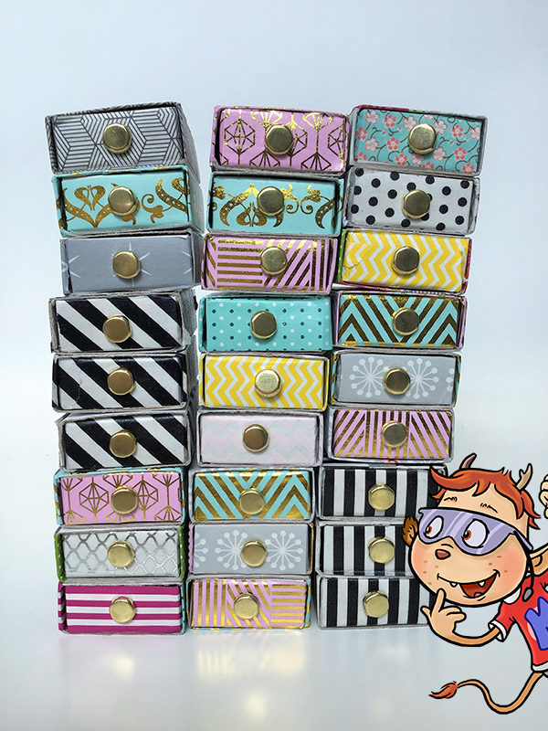

Bei dir Zuhause fliegen überall kleine Dinge herum? Du brauchst ein Versteck für geheime Kleinigkeiten?
Dann haben wir heute genau das Richtige für dich! Ein echt cooles selbstgebautes Streichholzschachtelregal. Das Regal ist praktisch, eine super Dekoration und ein süßes Geschenk.

In diesem Video zeigen wir dir, welche tollen Variationen von Regalen bei uns entstanden sind:
Videoclip:
Du brauchst:
- 3 bis 8 leere Streichholzschachteln
- Washi Tapes (= bunte Klebebänder)
- einen spitzen Gegenstand
- einen Holzspieß
- Musterklammern
- Fotoecken oder einen Kleber

Schritt 1:
Schiebe das Innere aus der Streichholzschachtel heraus.
Schritt 2:
Nimm einen spitzen Gegenstand und bohre damit ein kleines Loch durch die Mitte der Schachtelvorderseite. Lass dir von einem Erwachsenen dabei helfen, denn das Durchbohren geht etwas schwer!
Schritt 3:
Beklebe die Vorder- und die Rückseite des Inneren der Schachtel mit Washi Tape.
Tipp 1: Die Breite der Washi Tapes passt genau auf die zu beklebenden Seiten der Streichholzschachtel.
Tipp 2: Reiße ein etwas längeres Stück vom Washi Tape ab als du eigentlich brauchen würdest und lege es auf die zu beklebende Seite. Schneide die Stücke, die überstehen NICHT ab, sondern KLAPPE sie nach hinten UM.
Grund: So bekommst du viel schönere Kanten und die umgeklappten Stellen verschwinden nachher sowieso im Inneren der Schachtel.

Schritt 4:
Piekse jetzt mit dem Holzspieß nochmal an der Stelle durch das Washi Tape, wo du bereits das Loch in die Schachtel gemacht hast. Hier wird später der Griff der Schublade befestigt.
Schritt 5:
Nimm das Äußere der Streichholzschachtel.
Schritt 6:
Beklebe die beiden langen Seiten des Äußeren der Schachtel genauso wie gerade eben die Vorder- und Rückseite – das heißt: reiße etwas mehr vom Washi Tape ab als nötig und knicke die überstehenden Stücke (diesmal nach innen) um. So entstehen schöne Kanten.
Schritt 7:
Jetzt ist die Oberseite der Streichholzschachtel dran. Hier passen längs zwei Streifen Wahi Tape drauf. In der Mitte bleibt dann ein dünnerer Streifen frei – diesen kannst du entweder mit einem dünneren Washi Tape bekleben (gibt es zu kaufen) oder mit einen weiteren dritten Streifen des normal breiten Washi Tapes (vielleicht eines in einem anderen Muster). Die Enden werden auch hier wieder nach innen geklappt, wo man sie nicht sieht.
Schritt 8:
Nimm eine Musterklammer, stecke sie durch das Loch, das du gemacht hast, und klappe die beiden Enden der Klammer im Inneren der Schachtel in entgegengesetzte Richtungen um. Taadaa: Schon hast du den Griff der ersten Schublade.
Wiederhole diese Schritte beliebig oft – je nachdem wie viele Schubladen dein Regal am Ende haben soll. Statt wie KABU drei Schubladen übereinander zu machen, kannt du auch ein Regal bauen, das aus sechs Schubladen besteht: also zweimal drei Schachteln übereinander und dann diese beiden Dreierstapel nebeneinander.
Achtung, mitdenken! Beklebe bitte nur die Seiten der Streichholzschachteln, die man nachher auch wirklich sieht. Das heißt, du brauchst also nur von einer/zwei Schachteln die Oberseite zu bekleben, denn die Oberseiten der anderen Schachteln sind ja durch die darüberliegenden Schachteln verdeckt.
Schritt 9:
Zum Schluss müssen nur noch alle Schachteln zu einem Regal zusammengeklebt werden. Überlege dir, in welcher Reihenfolge du die Schachteln anordnen willst. Beklebe dann die Oberseiten aller Schachteln (bis auf die ganz oben) mit 6 Fotoecken und setze jeweils eine Schachtel auf die andere.


Fertig! Du hast es geschafft! Viel Freude mit deinem einzigartigen selbstgebauten Regal!
💭 Sprechblase Fertig! Du hast es geschafft! Viel Freude mit deinem einzigartigen selbstgebauten Regal!
